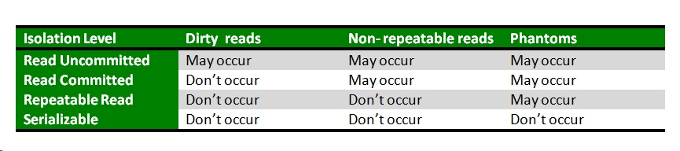

Hibernate

Page content
Transaction isolation levels
https://www.geeksforgeeks.org/transaction-isolation-levels-dbms/ A transaction isolation level is defined by the following phenomena –
- Dirty Read – A Dirty read is the situation when a transaction reads a data that has not yet been committed. For example, Let’s say transaction 1 updates a row and leaves it uncommitted, meanwhile, Transaction 2 reads the updated row. If transaction 1 rolls back the change, transaction 2 will have read data that is considered never to have existed.
- Non Repeatable read – Non Repeatable read occurs when a transaction reads same row twice, and get a different value each time. For example, suppose transaction T1 reads data. Due to concurrency, another transaction T2 updates the same data and commit, Now if transaction T1 rereads the same data, it will retrieve a different value.
- Phantom Read – Phantom Read occurs when two same queries are executed, but the rows retrieved by the two, are different. For example, suppose transaction T1 retrieves a set of rows that satisfy some search criteria. Now, Transaction T2 generates some new rows that match the search criteria for transaction T1. If transaction T1 re-executes the statement that reads the rows, it gets a different set of rows this time.
Four isolation levels :
